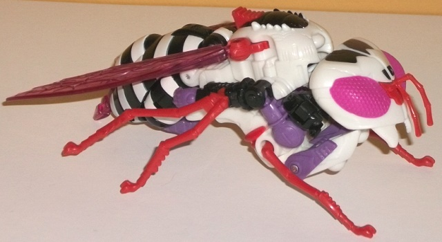

Size : Legends partner
Difficulty of Transformation : Very Easy
Color Scheme : Yellow, gray, silver, and some pea green
Individual Rating : 4.0
Allegiances : Waruder
(NOTE: Because the following two toys are
repaints, the rest of this is not a full-blown review. This mainly covers
any changes made to the two and their color schemes, and merely compares
them to the original versions of these molds. For a review on Generations
Legends Waspinator-- the mold used for Buzzer-- go
here
.
For a review on Generations deluxe Waspinator-- the mold used for Paralyzer--
go
here
.)
 Buzzer
Buzzer
Size
: Legends partner
Difficulty of Transformation
: Very
Easy
Color Scheme
: Yellow, gray, silver,
and some pea green
Individual Rating
: 4.0
This whole troop builder
"Waruder" set homages the bad guys from the Japanese "Diaclone" line, one
of the major precursors to the original Transformers toys. In Diaclone,
none of the robots were sentient-- rather, they had pilots, and for Buzzer
here, he's the "pilot" for the Paralyzer drone below (though it should
be made clear that the two molds cannot interact in that way at all, even
though it's a cool idea). Just like the other "pilots" in this troop builder
set, Buzzer's main body is a fairly straightforward gray, with some silver
paint on the wings and some "bug guts" green used on the eyes for both
modes, which certainly fits the alt mode. The difference for Buzzer is
that the rest of his plastic has been changed to yellow, which is certainly
fitting for the alt mode. That said, there's no dark colors for the yellow
to really contrast against, and the toy looks a little too light-colored
as a result-- I also would've appreciated a paint app or two on the yellow,
but for this small of a toy I guess you can't expect too much.
No mold changes have
been made to Buzzer.
 Paralyzer
Paralyzer

Size
: Deluxe (comes in a 4-pack
with
Mudfighter
,
Parasite
,
and
Storm Rider
)
Difficulty of Transformation
: Medium
Color Scheme
: White, black, transparent
purplish pink, and some pink, red, light pastel purple, and dull reddish
orange
Individual Rating
: 8.6
Paralyzer here is the
least obvious homage out of this troop builder set; only after asking at
BotCon did I get the answer that he's based off of
BotCon
2007 Bugbite
, which is... a bit of a stretch. Obviously this is a completely
different look mold-wise, for starters. White, black, and a light purple
are shared between both toys, but Paralyzer adds some more variation and
the general color layout is different as well. Still, strength of the homage
aside, Paralyzer looks pretty awesome-- the white and black obviously contrast
against each other nicely, and the addition of pink insect eyes and purplish-pink
transparent plastic for the wings, stinger, and robot eyes makes Paralyzer
look like some sort of albino wasp. Thankfully the pink doesn't extend
beyond these two areas and get itself into "obnoxiously loud" territory,
with a nice complementary pastel purple used for the upper arms, hands,
heels, waist, and a few other minor parts. It's a VERY nice shade of the
color and basically complements/contrasts against every other single color
quite well; in fact, I wish it were used just a bit more, like say on the
abdomen or something. There's also a little purple on the diamond in the
forehead of the robot head, and that combined with a bit of black paint
around the eyes makes the head look pretty swell (though I would've loved
some black-painted fangs). Additionally, there's some dull reddish orange
used for the insect legs and a few minor parts, which is a great addition
as-- other than black-- none of the other colors would've looked good on
the legs, and the black is already used enough elsewhere on the figure.
To top everything off, there's a bit of red paint on the lower legs in
robot mode. Overall there's a good number of paint apps on Paralyzer, from
the black bits on the insect forehead to the white/black stripes on the
abdomen to the white paint on the lower arms. The only part that's a bit
lacking in color variation is the lower legs, which have several details
that aren't painted-- the red is the only paint there.
No mold changes have
been made to Paralyzer; however, like the other deluxe Waruders in this
set, the robot heels are loose, which means the mold can't stand as easily
as the original Waspinator version can. This is unfortunately an unfixable
issue, but it's not a huge enough issue I'd say it ruins the toy.
The Paralyzer/Buzzer
set is my second-favorite of the Waruder troop builder duos. Paralyzer
has a pretty unique, awesome color scheme that sort of looks like an "albino"
wasp. The colors really contrast against each other very well, though this
is definitely the biggest "stretch" out of the homage color schemes in
this set; Bugbite was never an actual bug, and this "bug" version adds
some fairly major color changes to the mix to boot. Buzzer isn't anything
to write home about with the added yellow, though admittedly that's probably
the most fitting extra color added out of all the pilot figures in this
set (and because of this, I think he fits as a partner figure to Mudfighter
better). A nice set overall, but it's best to think of Paralyzer as his
own thing and not a half-way Bugbite homage.
Reviews by Beastbot